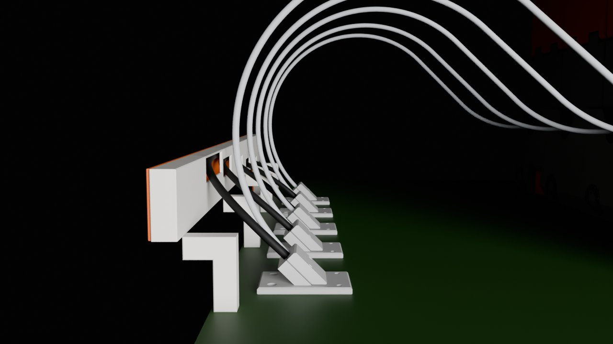
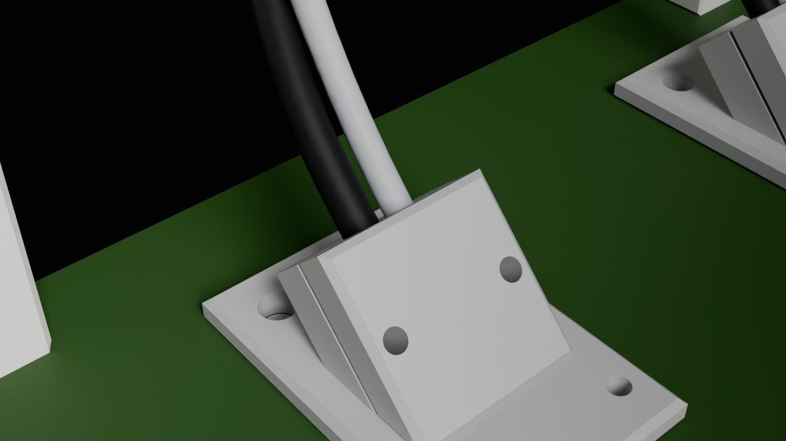
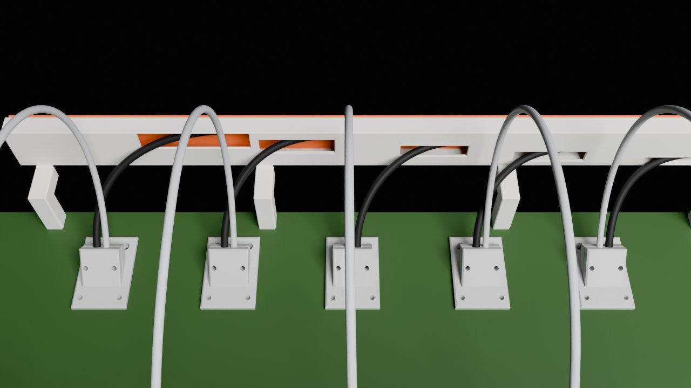
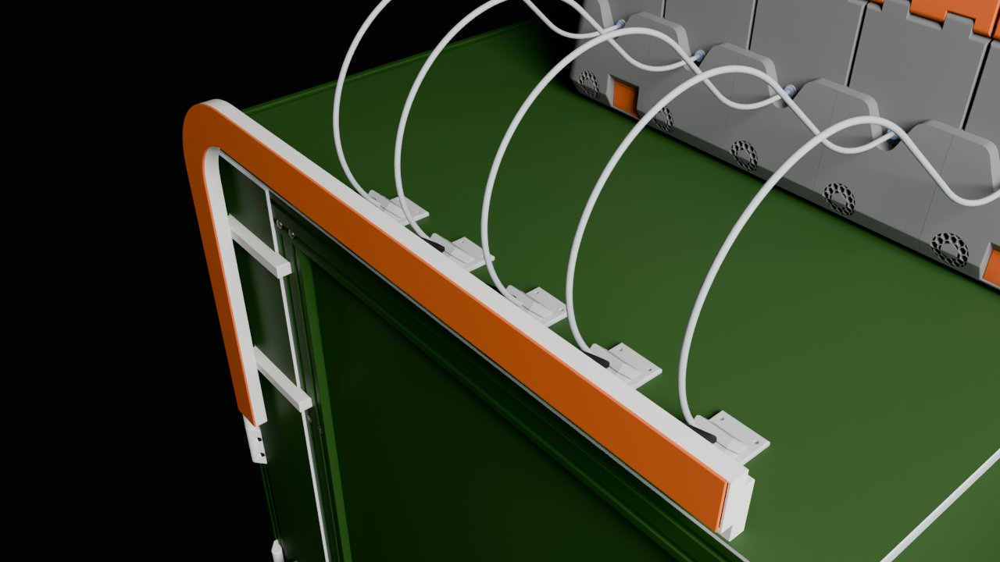
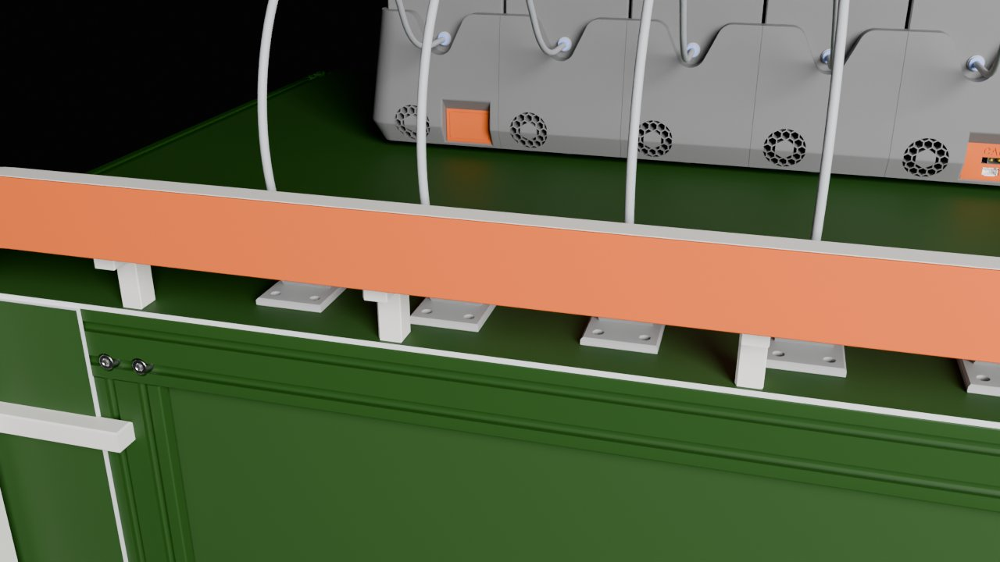

Verdict (owner, 2026-11-18): "that looks so much better". The roof clamps flat on the roof panel, the cable channel lowered, every new printed part chamfered (0.5 mm first layer, 1.0 mm top, bores none), the USB cables re-routed into the lower lanes, and the EMU lowered onto the roof with its five bowden tubes. Built by the real passes (lite-69 insulation, lite-70 roof exit, emu-4) into scratch copies; all three passed every check. Nothing is saved in the model folder yet.





| before | lite-70 | |
|---|---|---|
| Clamp flange | on the felt, 11 mm above the roof | flat on the roof panel |
| Channel lanes | Z 795–821 | Z 737–763 |
| Posts | 97 mm | 39.5 mm |
| USB cables | 83–98 mm shorter each; tails bend R ≥ 52.9 | |
| EMU tubes | crossed the cables | clear of every cable; bends R ≥ 85.9 |
| Chamfers | none | 0.5 first layer, 1.0 top (0.2 steps on narrow faces), bores none |
Two short edges at the ends of slot 5's cable window couldn't be chamfered by FreeCAD (logged in the pass).
lite-69 moved the roof insulation under the panel (#238), which left lite-36's clamp flanges 11 mm in the air and the EMU 19 mm above the roof. The owner asked for the clamps "flush against the roof", the channel lowered ("it will give us back some cable lenght") and every printed part chamfered (parts/printed/README.md). Building the passes into scratch copies first found a USB cable crossing its own bowden on the left-hand heads, so lite-70 now plans the cables round the tubes emu-4 routes.